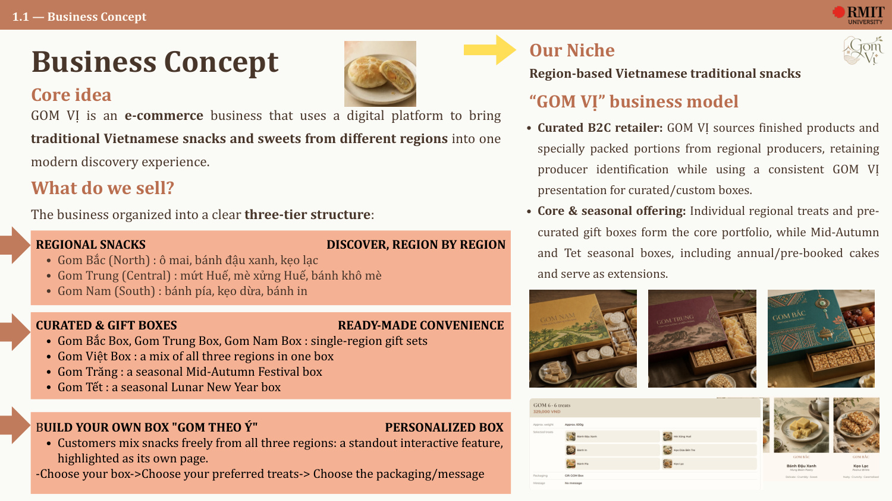
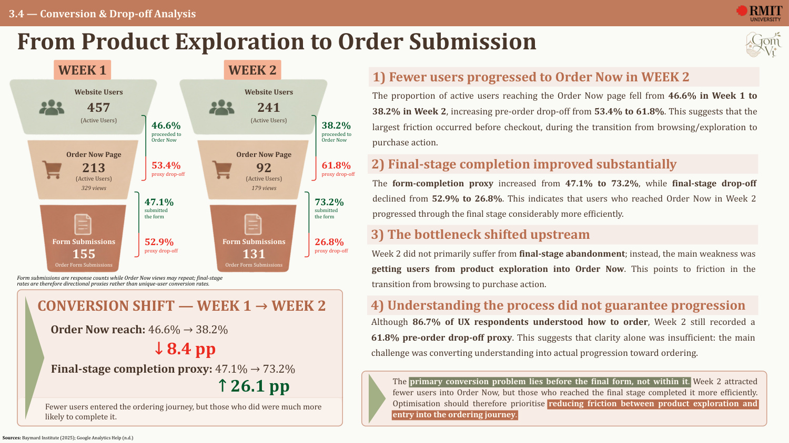
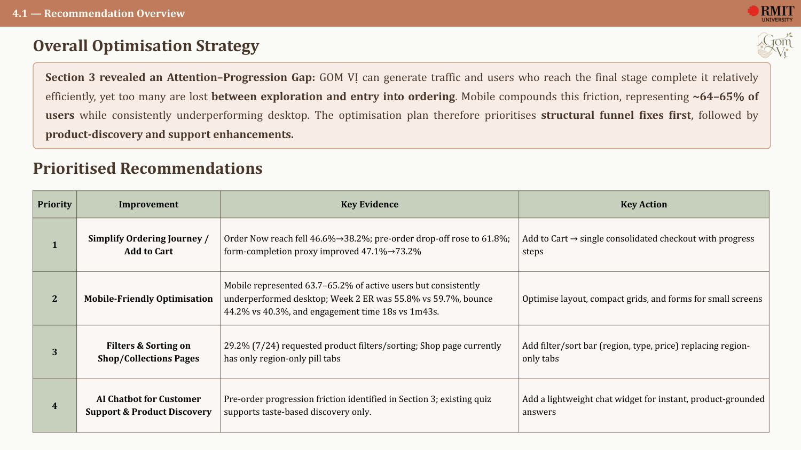

GOM VỊ
Discover the flavours of Vietnam, your way — then test whether the digital journey actually works.
The opportunity
GOM VỊ is an e-commerce concept designed to bring traditional Vietnamese snacks and sweets from different regions into one modern discovery experience. The business combines regional products, ready-made gift boxes and a “Gom Theo Ý” build-your-own box journey.
Regional snacks · Curated gift boxes · Build Your Own Box
Discovery, cultural storytelling, selection, ordering and seasonal campaigns sit within one website journey.
My role
The team contribution record identifies my role as Website Designer and Content / Slide Maker. I designed the Homepage, Shop and “Gom Theo Ý / Build Yours” experiences across V1 and V2, and owned the Section 3 website-performance analysis.
From website to diagnosis
01 — Build the experience
The website was designed around discovery by region, cultural context, curated boxes and personalisation rather than a generic product catalogue.
02 — Measure behaviour
GA4 tracked post-installation behaviour across two periods, including acquisition, landing-page quality, engagement, scroll depth and ordering progression.
03 — Find the real bottleneck
The key diagnosis was an Attention–Progression Gap: traffic could be generated, and users reaching the final stage completed it more efficiently, but too many users dropped before entering the ordering flow.
04 — Prioritise the fixes
The optimisation plan prioritised a simplified cart/checkout journey, mobile improvements, filters and sorting, then lightweight AI-assisted product support.
Selected proof
A curated view of the work. The full files are embedded below so the case study stays readable without hiding the evidence.



Live / external
Open the live project or supporting archive in a new tab.
Project files
Preview the source material directly here, or open it in a new tab for full-screen reading.